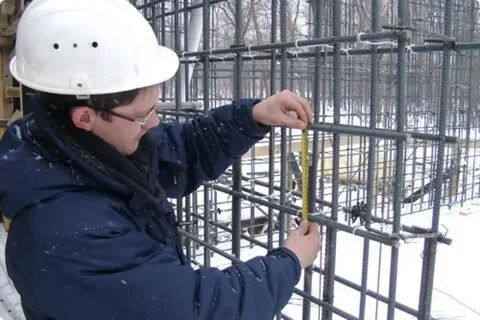

Контроль начинается до выхода на площадку
Контроль — это не финальная отметка «готово». Это последовательность проверок, привязанных к конкретной работе, проекту и моменту, когда результат ещё можно увидеть.
На промышленном объекте важно учитывать материалы, доступ к участку, действующие процессы и последовательность отключений. Поэтому контрольную базу формируют до начала операции, а не восстанавливают после её закрытия.
Три контрольные точки
Входная
Актуальная документация, материалы и понятное задание до начала работы.
Операционная
Проверка результата в тот момент, когда отклонение ещё можно исправить.
Приёмочная
Готовность участка, закрытые замечания и документы для передачи этапа.
Ответственный
Для каждой точки заранее известны проверяющий и следующий шаг.

Логика действующего производства
На работающей площадке в контрольную схему входят безопасные маршруты, окна доступа, зависимость операций и влияние работ на эксплуатацию. Нельзя обещать универсальный график: последовательность определяется проектом и условиями конкретного объекта.
Заранее разделите, кто выполняет работу, кто проверяет, кто принимает результат и кто закрывает замечание.
Что остаётся после проверки
Результат контроля должен быть пригоден для следующего участника проекта. Рабочая запись позволяет восстановить не только факт проверки, но и её контекст.
Решение
По какой документации проверяли.
Работа
Что и где выполнено.
Замечание
Что требует исправления.
Подтверждение
Кто и когда закрыл вопрос.
Источники и связанные материалы
- ГрК РФ, статья 53 — строительный контроль
- Постановление Правительства РФ № 468
- Кейс «Красный Октябрь» и услуга технического заказчика
Материал не заменяет программу строительного контроля и проектную документацию конкретного объекта. Нормативные требования нужно сверять в действующей редакции.